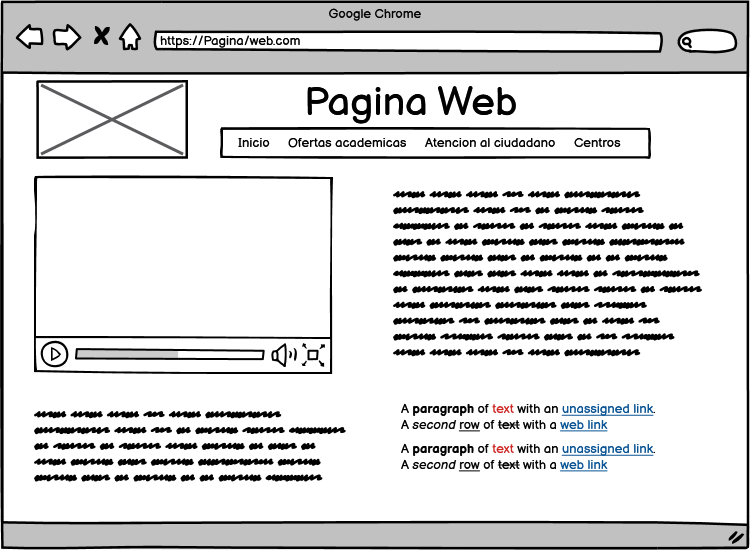

CONTENIDO EN HTML
Diseñar el OVI para el curso de diseño de sitios web con contenido de HTML
Objetivos especificos
- Determinar el contenido corresponde a cada parte del esquema
- Representar una seccion de una pagina
- Plazmar la maquetacion de la pagina principal
Materiales
Para el desarrollo de la pagina se utilizaras las siguientes imagenes
Imagenes
Se utilizara un video de motivacion
Video
Las etiquetas que se utilizan para seccionar una pagina
SECTION: Representa una sección genérica de un documento. Sirve para determinar qué contenido corresponde a qué parte de un esquema. Piensa en el esquema como en el índice de contenido de un libro; un tema común y subsecciones relacionadas. Es, por lo tanto, una etiquéta semántica. Su funcionalidad principal es estructurar semánticamente un documento a la hora de ser representado por parte de un agente usuario. Por ejemplo, un agente de usuario que represente el documento en voz, podría exponer al usuario el índice de contenido por niveles para navegar rápidamente por las distintas partes.
- Si la intención es indicar el contenido de un elemento section , es mejor usar el elemento article en su lugar, a modo de artículos independientes como en las revistas. section está diseñado para contenidos dependientes, pero diferenciados.
- No se debe usar el elemento section como un mero contenedor genérico; para esto ya existe div, especialmente si el objetivo solamente es aplicar un estilo (CSS) a la sección. Como regla general, el título de una sección debería aparecer en el esquema del documento.
ASID: Representa una sección de una página que consiste en contenido que está indirectamente relacionado con el contenido principal del documento. Estas secciones son a menudo representadas como barras laterales o como inserciones y contienen una explicación al margen como una definición de glosario, elementos relacionados indirectamente, como publicidad, la biografía del autor, o en aplicaciones web, la información de perfil o enlaces a blogs relacionados.
- No utilices el elemento aside para etiquetar texto entre paréntesis, ya que este tipo de texto se considera parte del flujo principal.
FOOTER: Representa un pie de página para el contenido de sección más cercano o el elemento raíz de sección, Un pie de página típicamente contiene información acerca de el autor de la sección, datos de derechos de autor o enlaces a documentos relacionados.
- Encierra la información acerca del autor en un elemento address que puede ser incluido dentro del elemento footer.
- El elemento footer no es contenido de sección y en consecuencia no introduce una nueva sección en el esquema.
ARTICLE: Representa una composición auto-contenida en un documento, página, una aplicación o en el sitio, que se destina a distribuir de forma independiente o reutilizable, por ejemplo, en la indicación. Podría ser un mensaje en un foro, un artículo de una revista o un periódico, una entrada de blog, un comentario de un usuario, un widget interactivo o gadget, o cualquier otro elemento independiente del contenido.
- Cuando los elementos están anidados, los internos representan artículos relacionados con el exterior. Por ejemplo, los comentarios de un blog pueden ser elementos article anidados al que representa la entrada del blog.
- Los datos del autor de un elemento article pueden ser proporcionados a través del elemento address, pero no se aplica a los elementos article anidados.
- La fecha de publicación y el tiempo de un elemento article pueden ser descritos con el atributo pubdate atributo de un elemento time.
Maquetación
